From Windows Logon Failure to Automated Security Incident Detection
One of the most valuable skills for a Security Operations Center (SOC) analyst is understanding how a single Windows security event becomes a meaningful security incident. In this project I built an end-to-end Microsoft Sentinel lab demonstrating the complete detection pipeline—from Windows event collection to automated incident generation.
Modern SOC teams cannot manually review every Windows event. This lab demonstrates how Microsoft Sentinel centralizes telemetry, analyzes Windows Security Events, and automatically generates security incidents using custom analytics rules.
I deployed a Resource Group, Log Analytics Workspace and Microsoft Sentinel, connected a Windows endpoint using Azure Arc, installed Azure Monitor Agent, configured Windows Security Events, verified SecurityEvent ingestion using KQL, created an analytics rule for failed logons, and successfully generated a Microsoft Sentinel incident.
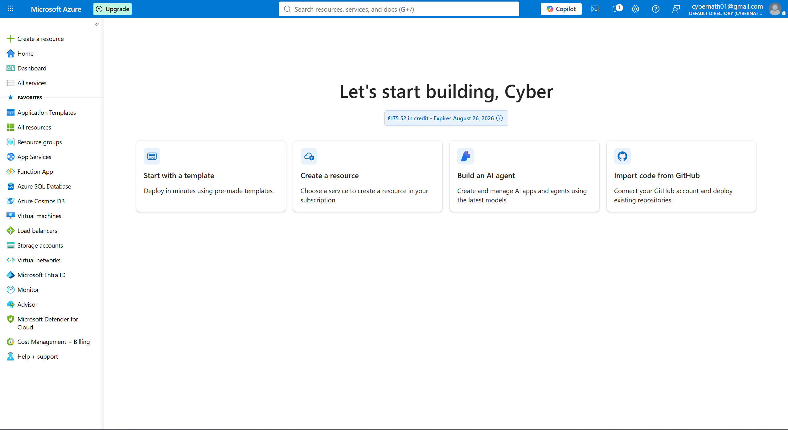
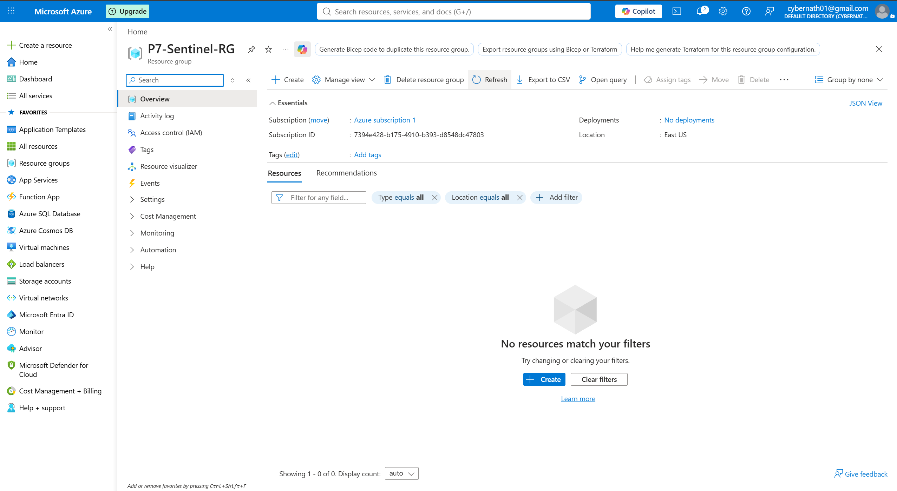
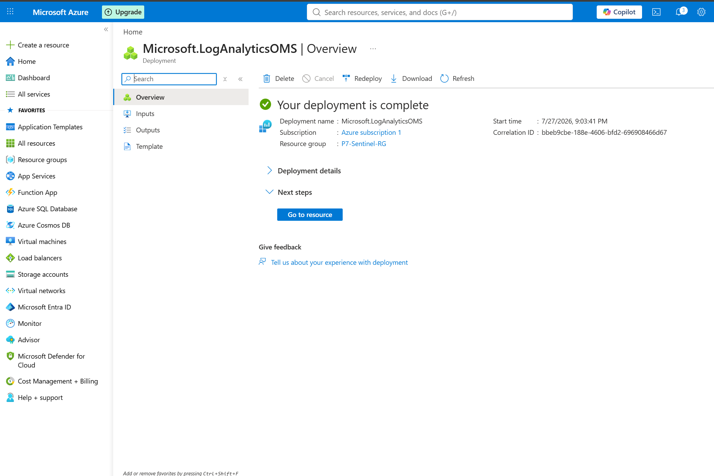
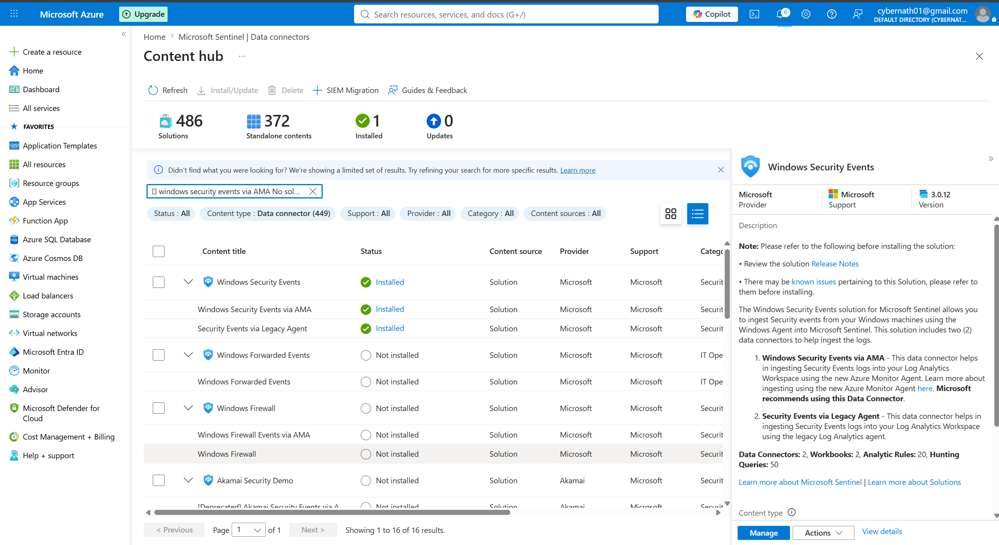
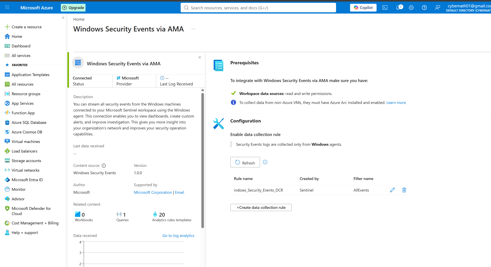
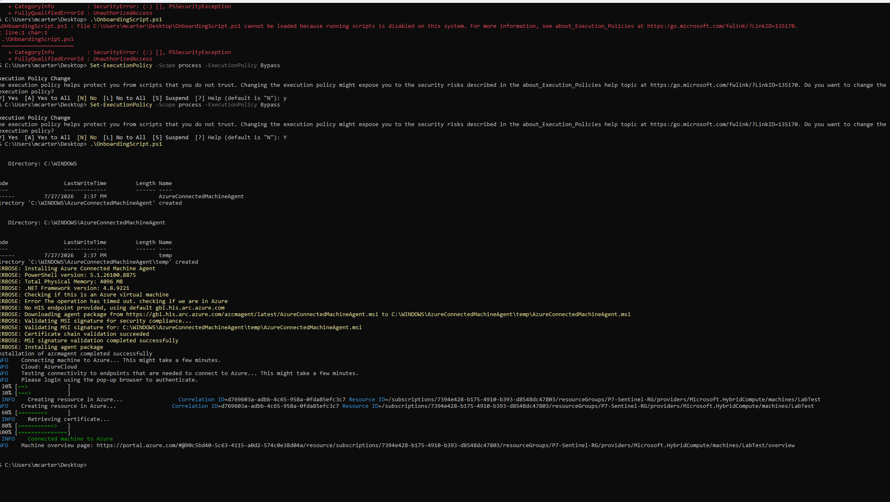
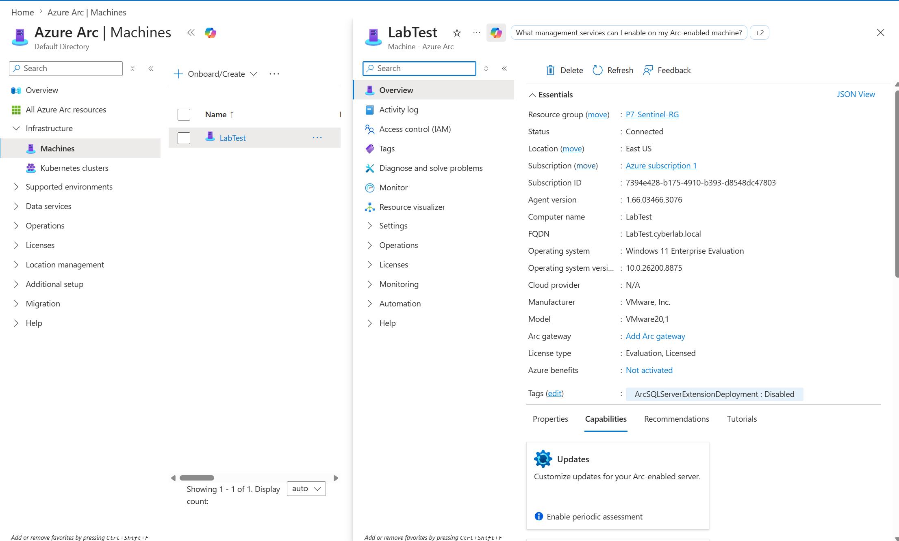
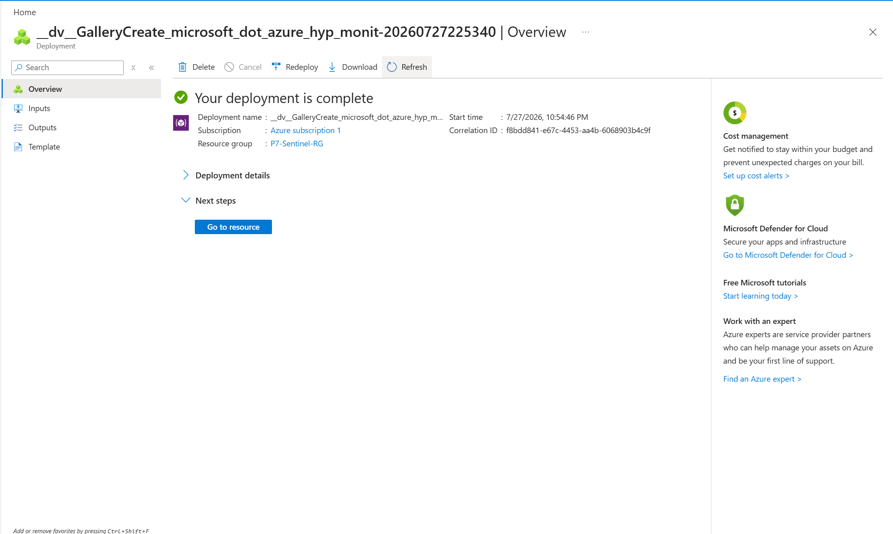
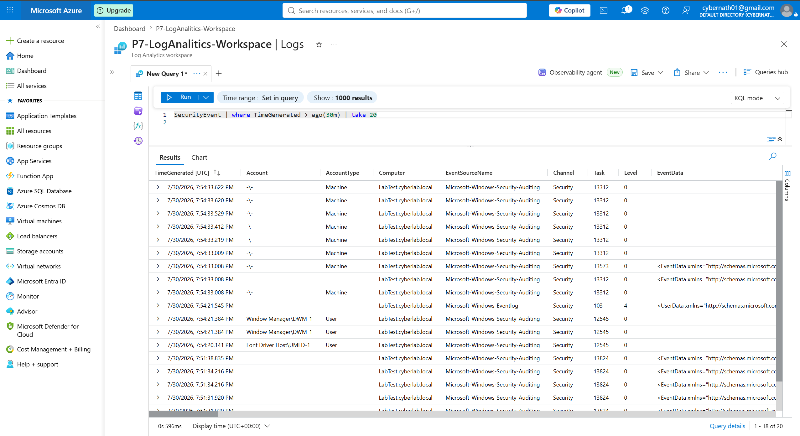
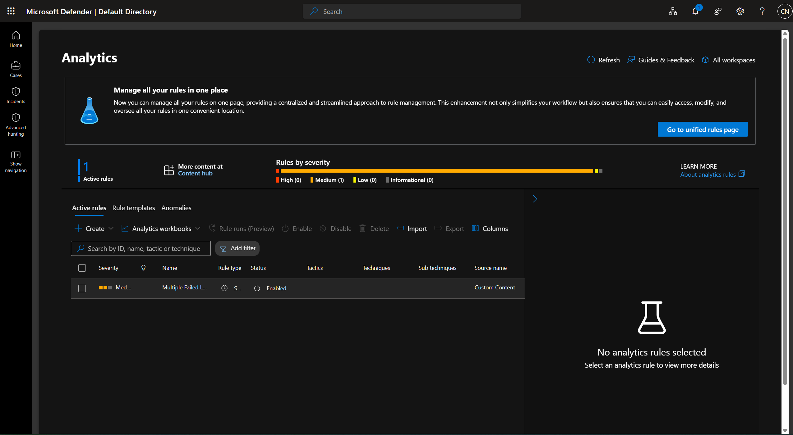
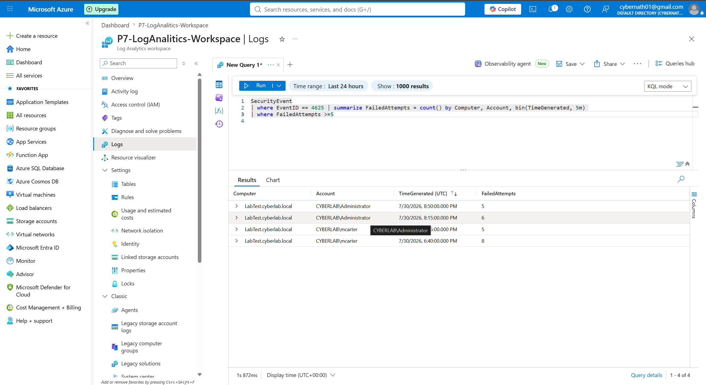
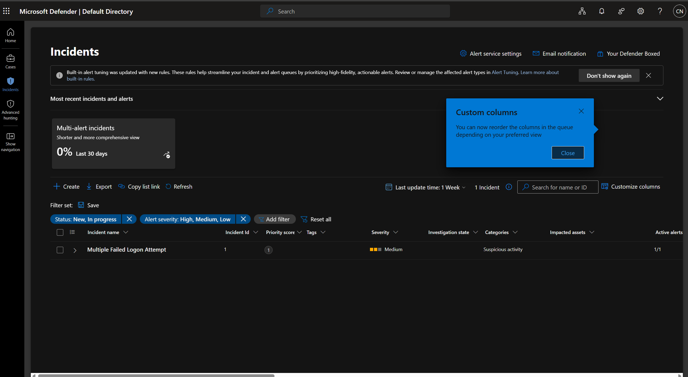
This project strengthened my understanding of Microsoft Sentinel, Azure monitoring, Windows event collection, KQL queries, and the complete workflow from failed Windows logon attempts to automated incident generation.